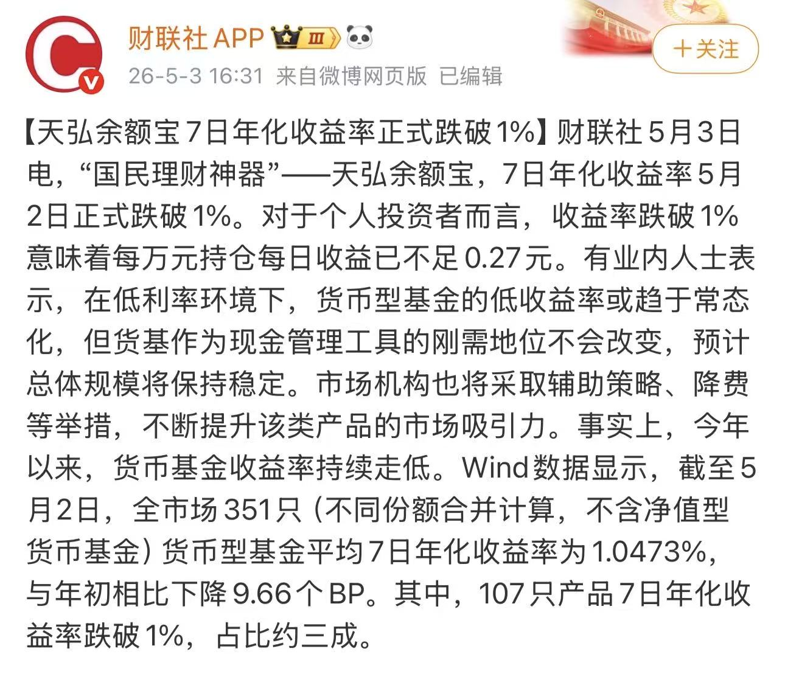
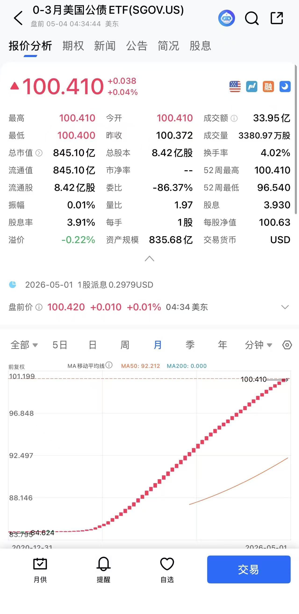

索瑟尔 𝓢𝓸𝓻𝓬𝓮𝓻𝓮𝓻🍥🏳️⚧️
@Sorcerer198964
@Zh_Crypto517 去年美债吃高息的已经被汇损吃干抹净了


Z大诗
@Zh_Crypto517
余额宝跌破 1%！我的零花钱"躺赚”时代结束了
可以看看美国版余额宝 —— SGOV 年化有 4%～5%
SGOV只投资 0-3 个月美国国债的 ETF，每月派息
你把闲钱放进去赚取接近短期国债利率的稳定收益，几乎零风险、流动性极高，像买卖股票一样随时进出 https://t.co/rqeWmrA5yE